About Me
Dedicated to leveraging my expertise in environmental science and climate change, with a focus on weather patterns in regions like the Himalayas, to drive sustainable solutions and community resilience. Committed to applying my knowledge and skills to address pressing environmental challenges, fostering a healthier planet through impactful, science-driven actions.
Work Experience
Research Assistant
Working on the project: "Impact Assessment of PMKVY on Skill Acquisition and Entrepreneurial Development among Tribal Youth in Jharkhand: Systemic Barriers and Pathways".
GIS Engineer
In the NSG project based in the Middle East, my role primarily involves satellite interpretation of various thematic layers such as hydrography, vegetation, agriculture, transportation, and physiography. I am also responsible for performing quality control on the data received from the production team, analyzing it thoroughly, providing feedback, and making necessary corrections.
Intern at Atmospheric Science Group
Researched climate and rainfall variability, analyzing impacts across India (West Coast, North India, etc.) from 1901 to 2022. Utilized IMD gridded data (0.25° and 1°), CPC GPCC, and ERA5 to understand how climate variability influences rainfall patterns in different geographic regions. Identified long-term trends, fluctuations, and anomalies using statistical modeling, trend analysis, and spatial mapping. Compared finer vs. coarser resolution data to capture localized variations and analyzed intra-annual variability using CRU, CPC, GPCC, and ERA5 datasets.
Field Investigator
Worked on the ICSSR short-term empirical research project titled: "Survey of National Education Policy 2020 implementation using AI - ML Techniques: A study of Odisha and Jharkhand". Evaluated policy implementation in technical institutions by conducting field surveys, coordinating with institutional leaders (University VCs, IIT Directors, students), and analyzing the collected data using statistical tools like IBM SPSS and EXCEL.
Education
PG Diploma in Applied Geoinformatics
Final Grade: 78.80%
Thesis: Urban Heat Island Dynamics: Spatial Analysis and Predictive Simulation Modelling
Website: cadcentreju.org
M.A. Geography (Hons)
Field of Study: Arts and Humanities
Final Grade: 8.7 CGPI
Thesis: Impact of climate change on rainfall variability on Bhima basin
Website: mu.ac.in
High School
Field of Study: Arts and Humanities
Final Grade: 81.8%
Skills & Technical Expertise
Comprehensive toolkit spanning spatial analysis, statistical modeling, and data management.
Projects & Spatial Analysis
Selected research and geospatial projects. Click on any map or graph to enlarge it.
Project - Urban Heat Island Dynamics: Spatial Analysis and Predictive Simulation Modelling
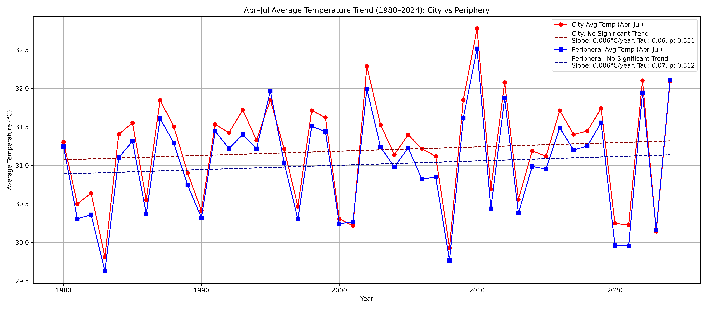
This graph displays the datasets, highlighting the impact of the Urban Heat Island (UHI) effect. The graph clearly shows that temperatures have increased over time in both areas; however, the average temperature in Lucknow city is consistently higher than in the peripheral regions. This indicates the presence of the UHI effect. If we analyse the pattern, it is apparent that in the early years, the temperatures in the city and surrounding areas were more similar. However, after 2000, the city’s temperature became consistently higher, reflecting increased urbanization, reduced vegetation, and significant land use changes. Furthermore, the growing gap between the average temperatures of urban and rural areas suggests that factors like global warming are contributing to rising temperatures overall. This, in turn, intensifies the UHI effect and could potentially lead to more frequent and severe heat waves in the region. The trend clearly shows an upward trajectory, reinforcing the concern over rising urban temperatures.
To validate whether there is an actual trend in the previous graph, we applied the Mann-Kendall test to determine if the trend is increasing, decreasing, or non-existent. Additionally, we used Sen’s slope estimation to assess the magnitude of change over time. In the given graph, we observe a positive Tau value of 0.06. Although this indicates a weak upward trend, it is very close to zero and not statistically significant. Since the p-value is 0.551, which is greater than the commonly used significance level of 0.05, we conclude that the trend is not statistically significant. This means we fail to reject the null hypothesis, which states that there is no trend, and we do not accept the alternative hypothesis of a significant trend. The estimated magnitude of change over the last 44 years is 0.006°C for Lucknow city and 0.007°C for the peripheral region. Observing the entire graph, we notice considerable interannual variability, particularly after 2000. Prominent temperature spikes are observed around 2009, 2016, and 2023, possibly related to extreme weather events or El Niño years. Conversely, lower temperature clusters appear in the early 1980s and around 2020, which may be associated with La Niña or other cooling events.
The given graph clearly illustrates the relationship between rainfall and Urban Heat Island Intensity (UHII), showing an inverse correlation between the two datasets. As rainfall decreases, UHII tends to increase, indicating that reduced precipitation may exacerbate urban warming.
From the graph, it is evident that UHII has been increasing steadily since around 2005. Notably, peak UHII values occurred in the early 1990s, and again around 2015 and 2018, suggesting stronger urban heat effects during those monsoon years. This implies that even during traditionally cooler, rainier seasons, urban areas are experiencing elevated heat levels—possibly due to intensified urbanization and declining vegetation. However, in the past five years, there appears to be a decline or stabilization in UHII values. This trend may point to a temporary reduction in UHI intensity, potentially due to land use changes, increased green cover, or other climate adaptation measures. Overall, the observed pattern underscores the urgent need for climate-resilient urban planning and effective heat mitigation strategies, especially in monsoon-dependent regions.

This map shows predicted land cover categories for the year 2033 in Lucknow, derived likely using cellular automata, Markov chain analysis, or agent-based modelling—common geo-simulation methods for urban growth prediction.
- Urban Growth Trends: A noticeable spread of built-up area across most parts, particularly the central and north-western regions, indicates rapid urban expansion. This implies the city is likely undergoing horizontal growth, typical in low-density development patterns.
- Vegetation Loss: Pockets of vegetation remain, especially in the southern and eastern zones, but many central and northern areas show a shift from green to grey. Suggests a likely conversion of green space to urban land, reflecting future environmental pressure.
- Bare Land as Transitional Zones: Concentration of bare land in the north-eastern and southwestern fringes signals future hotspots for construction and infrastructure development.
- Hydrological Impact: Water bodies (e.g., the river cutting through the city) are closely surrounded by built-up zones, pointing to potential floodplain encroachment or urban water stress scenarios.
Model Implications for Urban Planning:
- Land Use Regulation: Urban growth models must inform zoning policies to preserve green spaces and avoid unregulated sprawl.
- Environmental Conservation: Prediction supports proactive measures to protect vegetation and water bodies.
- Infrastructure Planning: Helps prioritize where to direct infrastructure investment, utilities, and transport corridors.
- Disaster Management: Essential for flood risk mapping, especially where built-up areas encroach on rivers or low-lying bare land.
This map is a predictive spatial planning tool based on geo-simulation models. It offers foresight into urban expansion trends, potential ecological stress zones, and planning challenges. Properly used, it can guide sustainable urban development policies in Lucknow and inform mitigation strategies for upcoming land use changes.
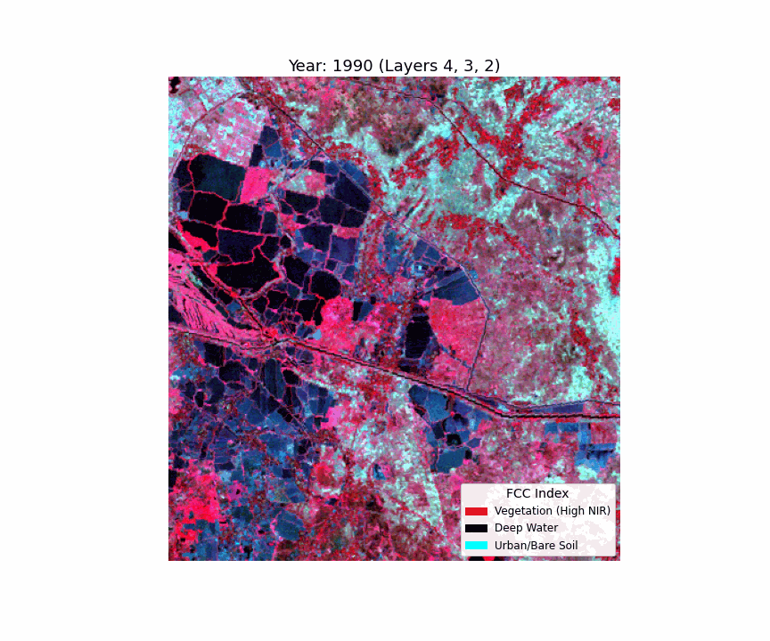
A satellite image time-series spanning from 1990 to 2020 rendered in a Standard False Color Composite (FCC) using bands corresponding to Near-Infrared (NIR), Red, and Green (Layers 4, 3, 2—typical for Landsat 4-5 TM / Landsat 7 ETM+).
- Agricultural & Inundation Changes: The large, geometric grid-like plots dominating the center and left sections represent managed agricultural fields or aquatic farming plots. Over the 30-year period, these fields alternate dramatically between deep black/blue (flooded/inundated state) and bright red (active crop growing seasons).
- Urban Expansion & Soil Clearance: The cyan and light blue patches across the top-right and lower regions display a noticeable increase in footprint over time, indicating urban sprawl, land clearing, or road network growth.
- Vegetation Variability: Variations in the intensity of red across different years highlight seasonal or annual changes in canopy cover, crop cycles, or regional moisture availability.
Project - Comfort Zone Map of Lucknow City (1999-2025)

The "Comfort Zone Map of Lucknow City" illustrates the spatial and temporal changes in thermal comfort levels across the city over four distinct years: 1999, 2009, 2017, and 2025 (projected). The maps use a detailed color-coded legend ranging from "Very High Comfort Zone" (deep green) to "Extremely Discomfort Zone" (deep red), helping visualize shifts in environmental conditions over time.
- 1999: A Predominantly Comfortable City
In 1999, the city enjoys widespread thermal comfort. Green and light green zones (moderate to high comfort) dominate the landscape, especially in the central, southern, and eastern regions. Discomfort zones are limited and fragmented, suggesting a healthy urban ecosystem with ample vegetation, low-density development, and effective natural ventilation. This year represents a baseline of ecological balance, where the built environment and natural systems coexist relatively harmoniously. - 2009: Early Signs of Urban Thermal Stress
By 2009, a noticeable shift occurs: Orange and red zones (discomfort and high discomfort) begin to replace the earlier comfort zones, especially in the central and northern parts of the city. The moderately comfortable areas shrink, indicating growing heat stress from increasing built-up surfaces, declining green cover, and intensifying anthropogenic heat. This period marks the onset of the urban heat island effect, a by-product of rapid, often unplanned, urban expansion. - 2017: Intensification of Discomfort
The year 2017 shows a concerning transformation. Red zones (extremely discomfort) now dominate vast portions of the city, with the discomfort belt spreading widely across northern and central areas. Comfort zones have become isolated patches, confined mainly to the southern and peripheral zones. The map suggests an urgent environmental tipping point, where thermal discomfort has become a citywide norm rather than an exception. - 2025 (Projected): A City Under Severe Thermal Stress
The projection for 2025 reveals an alarming transformation. The majority of the city falls under extremely discomfort and high discomfort zones, with red and orange hues overwhelming the map. Only a few fragments of comfort zones remain, mostly on the urban fringe, indicating significant ecological degradation. This scenario forecasts a future of widespread thermal discomfort, posing serious risks to public health, energy consumption, and liveability if current trends persist.
Conclusion: A Call for Sustainable Urban Resilience
The maps collectively depict a clear and troubling trajectory—from a largely comfortable urban environment to one dominated by heat stress and discomfort. This trend correlates strongly with:
- Urban sprawl
- Loss of vegetation and open spaces
- Rising surface temperatures
- Increased infrastructure density
To reverse or mitigate these effects, urgent policy action is required. Recommendations include:
- Enhancing urban green infrastructure (parks, green roofs, vertical gardens)
- Promoting climate-sensitive urban design
- Preserving and expanding blue and green networks
- Implementing heat-resilient architecture and materials
In essence, the comfort zone maps of Lucknow are more than just thematic representations—they are visual warnings and planning guides for building a more resilient, sustainable, and liveable city.
Project - Impact of Climate Change on Rainfall Variability in Bhima Basin
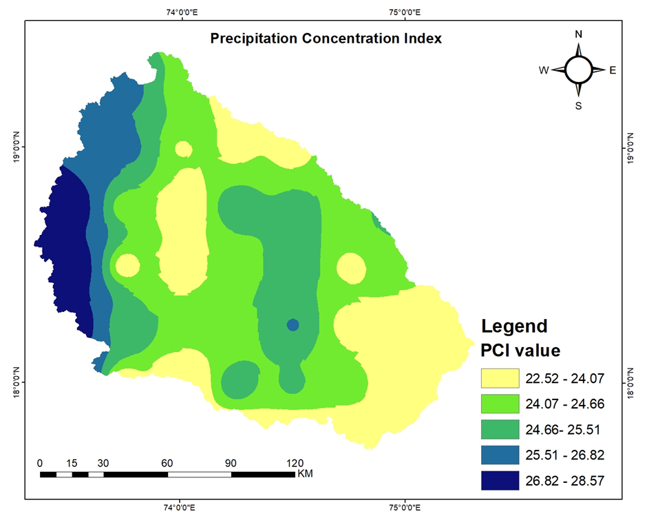
The Precipitation Concentration Index (PCI) across the basin, with values remaining consistently elevated throughout the entire study area. All 49 monitoring stations exceeded the baseline threshold of 21, placing the entire region firmly within the very high rainfall concentration category.
This indicates that precipitation is delivered highly unevenly over time. Station 999 recorded the highest PCI value in the dataset (24.79), followed closely by Stations 865 and 909. Such intense temporal concentration directly contributes to hydrological extremes, increasing the risk of flash flooding, prolonging dry periods, and accelerating soil erosion through rapid runoff generation.
Stations 867, 826, and 827 recorded the lowest PCI values in the dataset; however, even these minimums remain well above the severe concentration threshold, confirming that well-distributed rainfall is entirely absent from the basin.
Spatially, the central basin dominates the distribution, falling within a PCI range of 24.07–24.77, represented by light green shading on the map. The highest PCI values are concentrated in the north-western sector, indicated by darker shading, marking a localized zone of peak rainfall concentration.
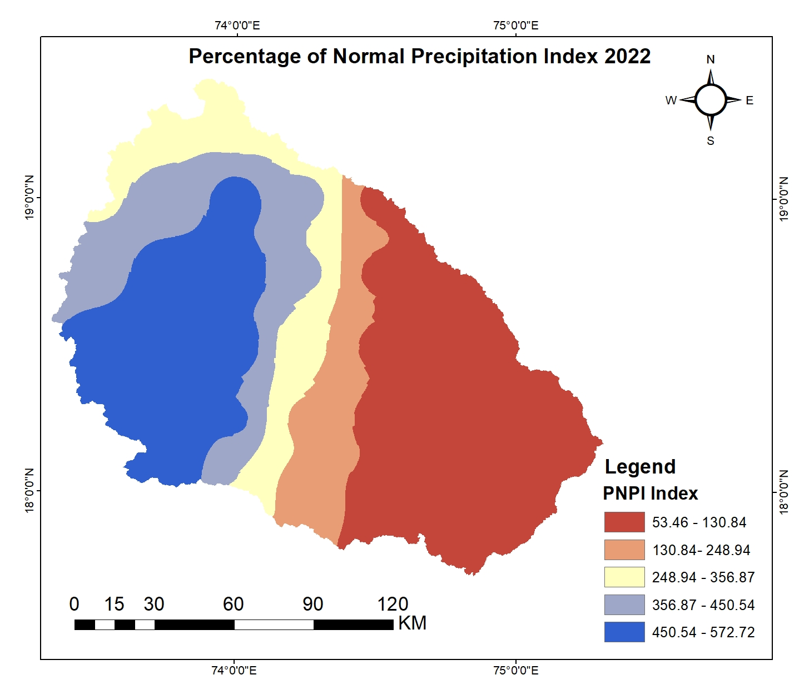
The Percent of Normal Precipitation Index (PNPI) is a straightforward measure that compares actual rainfall at a station to its long-term average (or "normal") rainfall, expressed as a percentage. Values above 100 indicate wetter-than-normal conditions, while values below 100 indicate drier-than-normal conditions, allowing stations to be classified into categories ranging from severe drought to humid. The PNPI analysis reveals that out of the 49 stations, 29 are classified as humid, with PNPI values exceeding 120, indicating a prevalence of above-average rainfall conditions at these locations. Station 865 recorded the highest PNPI value in the dataset. Five stations fall within the normal category, with PNPI values ranging from 80 to 120. Station 827 falls under the light drought category, while 12 stations are classified under moderate drought, and two stations are categorized as experiencing severe drought conditions.
Above-average rainfall carries both benefits and risks. On the positive side, it can improve water quality, enhance crop yields, support aquifer recharge, and reduce the risk of drought. Conversely, excessive rainfall may lead to flooding, soil erosion, and landslides, while also posing challenges for agricultural activities and transportation.
In terms of spatial distribution, the map shows that the north-western part of the basin records the highest PNPI values, represented in blue shades, while the lowest values are concentrated in the red-shaded areas.
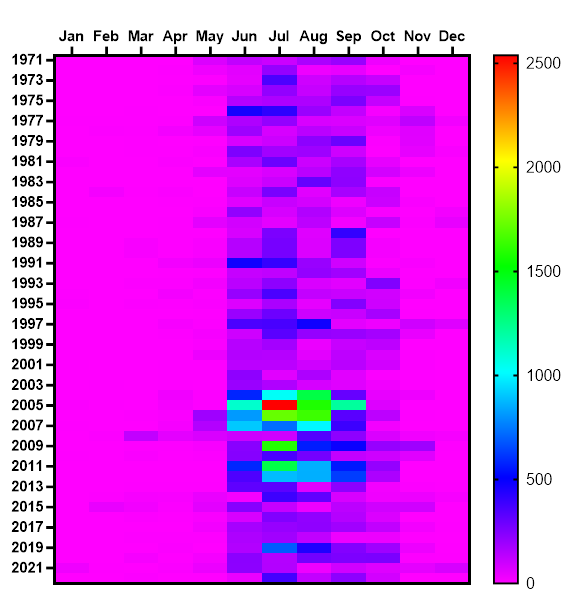
The Heat map presents monthly rainfall (in mm) for a zone of the basin where the average annual rainfall ranges between 100 and 150 cm, covering the period from 1971 to 2022. For most of the record, rainfall remained largely confined to the monsoon months (June–September), with values generally concentrated between 0 and 500 mm, while the remaining months stayed close to zero.
This pattern shifted notably around 2005, when monsoon rainfall intensified sharply. July 2005 recorded the highest rainfall in the entire dataset, at approximately 2,500 mm, with elevated values also observed in the adjoining months of June and August (1,500–2,000 mm) and September (around 1,000 mm). This anomalous spike coincided with a major flood event in the region. Similar, though less extreme, elevated rainfall was also observed during the monsoon seasons of 2009 and 2011, suggesting a broader trend of intensifying monsoon rainfall in the years following 2005.
Project - PMKVY Spatial Analysis in Jharkhand

Geospatial investigation of skill-development centres, accessibility, terrain and spatial patterns among tribal youth.
In spatial analysis and environmental modelling, Slope and Terrain Ruggedness Index (TRI) are critical topographic metrics used to evaluate landform geometry, accessibility, and surface movement. Slope measures the rate of elevation change (steepness) in degrees or percentage, making it essential for assessing slope stability, soil erosion potential, landslides, surface runoff velocity, and land-use suitability for agriculture and urban development. In contrast, TRI quantifies elevation variation among neighboring grid cells to represent surface roughness; high TRI values indicate jagged, broken, or complex terrain, whereas low values signify smooth, flat topography. Together, these metrics are extensively applied in hydrological modelling, infrastructure planning, route optimization, ecological habitat suitability mapping, and spatial access analysis—such as identifying physical barriers to transport, healthcare, or educational facilities in rugged geographic regions.

Combining Elevation (a Digital Elevation Model or DEM) and Hillshade into a single overlay creates a depth-enhanced, realistic visual representation of landscape topography that bridges quantitative elevation data with intuitive spatial perception. In this technique, a semi-transparent, color-coded elevation layer is draped over a grayscale hillshade raster—which simulates directional sunlight and shadow across terrain—to clearly accentuate landform features like valleys, ridges, drainage channels, and steep escarpments. Beyond cartographic visual enhancement, this combined analytical tool is extensively used in geomorphology, hydrological watershed delineation, natural hazard assessment (such as mapping landslide susceptibility and flood pathways), and infrastructure routing. Furthermore, by pairing absolute height above sea level with surface illumination geometry, it allows researchers to accurately model microclimates, solar radiation exposure, and physical accessibility across complex terrain.
Project - Comparative Analysis of Indian Summer Monsoon Rainfall in Various Observational/Reanalysis Datasets

The Mann-Kendall trend test was applied to the annual rainfall series under six configurations: the unmodified record ("All Years"), two outlier-filtered versions (excluding observations beyond 1.5σ and 2σ from the mean, respectively), and the same three configurations following a systematic +1° adjustment.
For the unadjusted series, the full record exhibited a statistically significant declining trend (τ = −0.15, p = 0.022). However, this trend was not robust to outlier removal: after excluding values beyond 1.5σ, no significant trend remained (τ = −0.00, p = 0.951), and after 2σ filtering the trend was likewise non-significant and weakly positive (τ = 0.12, p = 0.072). This indicates that the apparent decline in the raw series is disproportionately influenced by a small number of extreme high- and low-rainfall years rather than reflecting a consistent monotonic shift across the record.
In contrast, the trend was considerably more robust in the 1°-adjusted series. All three variants showed a negative association, with the strongest and most significant decline observed after 1.5σ filtering (τ = −0.26, p = 0.0001), followed by the unfiltered adjusted series (τ = −0.24, p = 0.0002). The 2σ-filtered adjusted series approached but did not reach conventional significance (τ = −0.13, p = 0.056). The persistence of a significant declining trend even after removal of extreme values suggests that the 1° adjustment captures a systematic component of the decline that is not attributable solely to outlier influence, and which becomes more apparent in the latter half of the record (post-1980).
Taken together, these results suggest that evidence for a long-term decline in rainfall over the study period is sensitive to both the treatment of extreme values and the applied adjustment. While the unadjusted data alone provide only weak and outlier-dependent support for a declining trend, the adjusted series point toward a more robust and statistically defensible decline, warranting further investigation into the physical basis of the adjustment and its interaction with interannual variability.
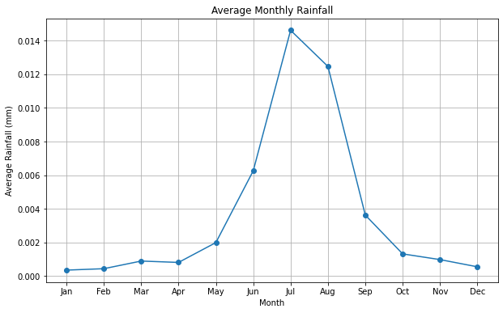
This line plot illustrates the climatological cycle of average monthly rainfall, featuring a single prominent peak that reflects a clear monsoonal climate pattern. Rainfall remains extremely low through the early months of the year, starting at roughly 0.0004 in January and inching up slightly through May 0.0020. A sharp surge begins in June 0.0063 as the wet season takes hold, quickly reaching the annual maximum in July at approximately 0.0146. Precipitation stays substantial into August 0.0125 before dropping off rapidly in September 0.0036 and October 0.0013. The year concludes with a return to dry conditions, tapering down through November 0.0010 and December 0.0005.
Creative Works
Achievement | 2019
Received appreciation from FM Fever Radio 104.0 and Gautam Gambhir (Member of Parliament, East Delhi Constituency) for the innovative idea of refusing single-use plastic to beat plastic pollution—specifically, bringing reusable steel cutlery for daily lunch and refreshments. Featured in Punjab Kesari newspaper for outstanding work in a cleanliness drive in DDA Flats, as part of the Swachh Bharat Se Swasth Bharat campaign. The primary objective was driving behavioral change, as human behavior plays a critical role in environmental sustainability.


Participations
Conferences, seminars, community workshops, and event volunteering.
-
Student Volunteer & Technical Assistant | Asia Oceania Geosciences Society (AOGS) Conference 2025Worked as Technical Assistant and Student Volunteer assisting international delegates, session organization, and logistics during the annual geosciences conference.
-
Participant | Sensitization Program on Prevention of Drug AbuseParticipated in a one-day awareness initiative jointly organized by the National Institute of Social Defence (NISD), Ministry of Social Justice and Empowerment, and the NSS Unit, ARSD College.
-
Participant & Volunteer | MTNL Perfect Health MelaEngaged in community health and wellness outreach campaigns organized by the Heart Care Foundation of India (HCFI) in collaboration with the Government of NCT of Delhi.
-
Participant | Digital Transformation: An India StoryAttended discussions on technological innovation and digital public infrastructure, organized by Carnegie India in collaboration with Meta India under the G20 framework.
-
Participant | Youth Vision for Circular EconomyContributed to youth climate action dialogues on sustainable resource frameworks, organized by the Indian Youth Climate Network (IYCN) in partnership with EU-Resource Efficiency and IIT Delhi.
Volunteering & Community Service
National Service Scheme (NSS) social initiatives, disaster relief, sports volunteering, and environmental drives.
-
Kerala Flood Relief Drive & PMO AppreciationParticipated in the Kerala flood relief donation drive, collected ₹21,000/- for flood victims, and received an appreciation letter from the Prime Minister's Office (PMO).
-
Khelo India Sports Event VolunteeringParticipated and volunteered in Khelo India, organized under the Government Scheme of the Ministry of Youth Affairs and Sports.
-
NSS Seven-Day Special CampSuccessfully participated in the 7-day Special NSS Camp dedicated to community service, rural development, and youth leadership.
-
Road Safety Panel Discussion | IIT DelhiParticipated in a panel discussion on "Role of Youth in Road Safety" organized by the Indian Road Safety Campaign held at IIT Delhi.
-
Swachhata Hi Seva & Cleanliness DrivesLed and participated in cleanliness drives in Sheikh Sarai, Swachhata Hi Seva campaign in college campus, and local environmental awareness drives.
-
Plantation & Cloth Donation DrivesOrganized and participated in tree plantation drives across the college campus and conducted cloth donation drives in slum areas near Okhla, Delhi.
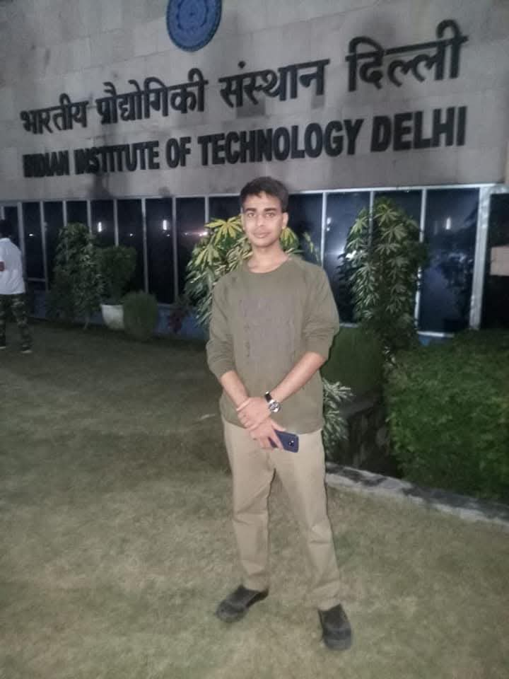
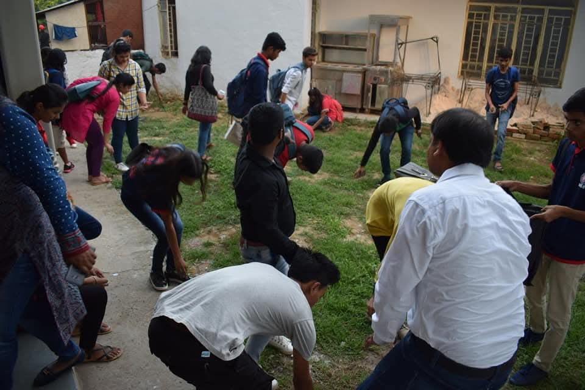
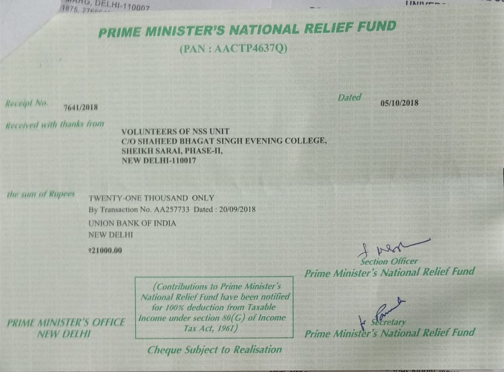
.jpeg)
Certificates & Training Documents
Professional training, academic learning, GIS, Remote Sensing, climate and Earth observation certificates.
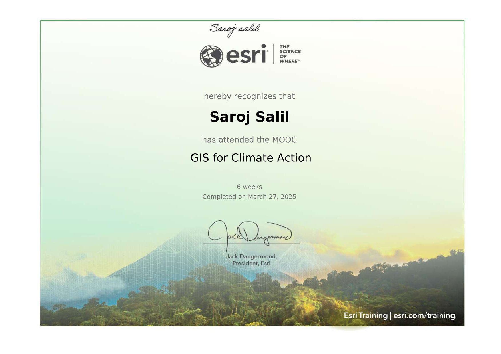
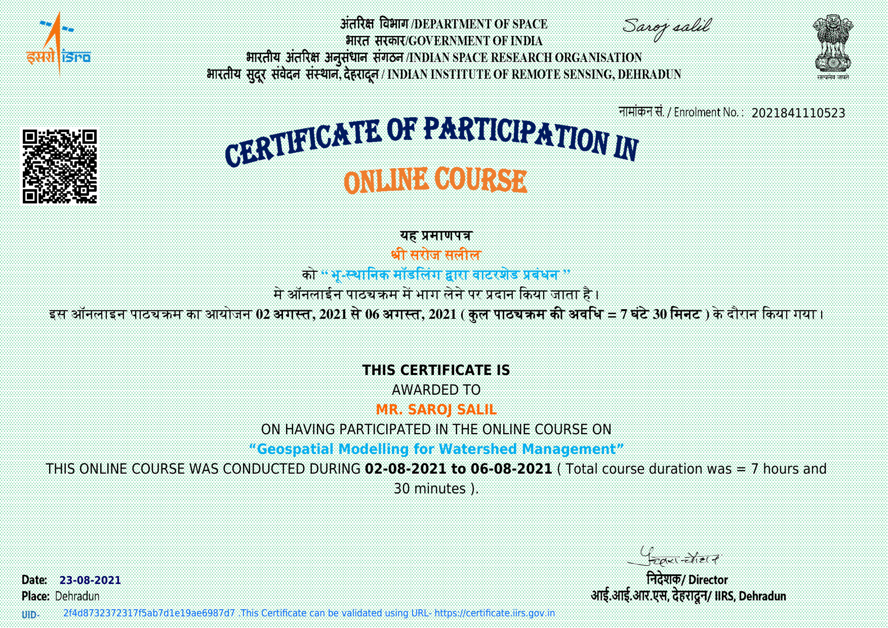
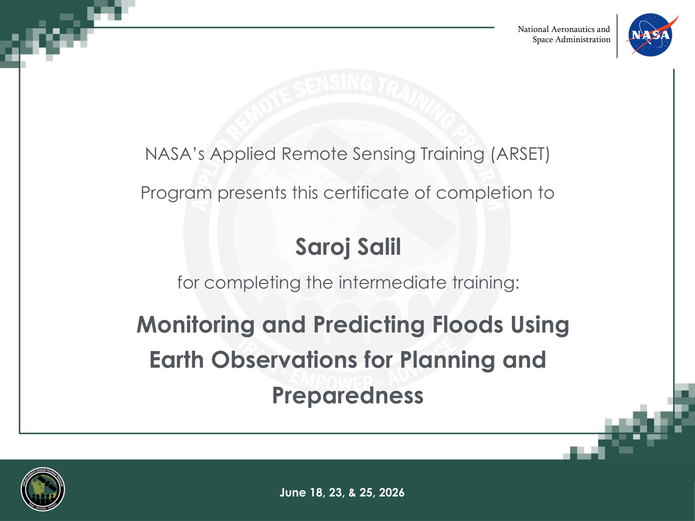
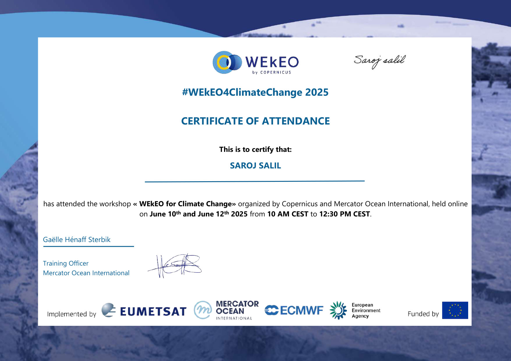
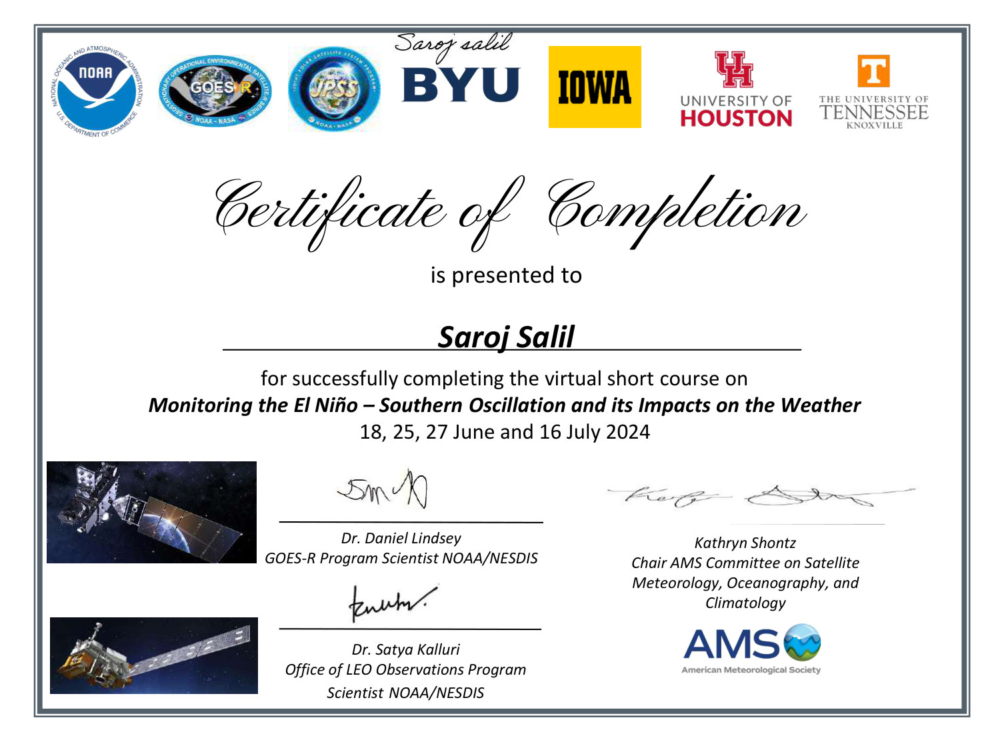
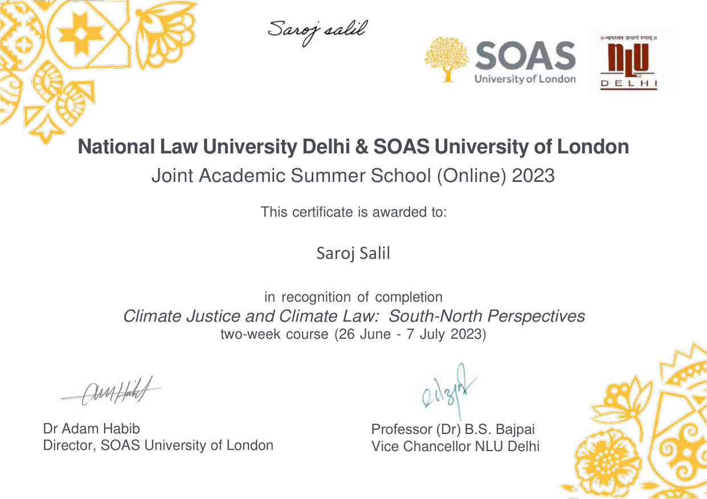
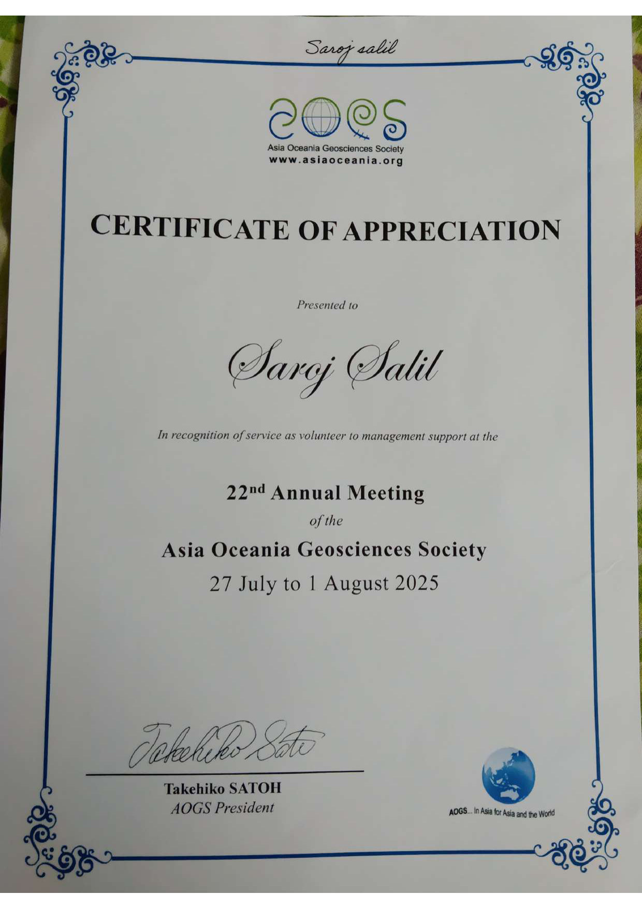
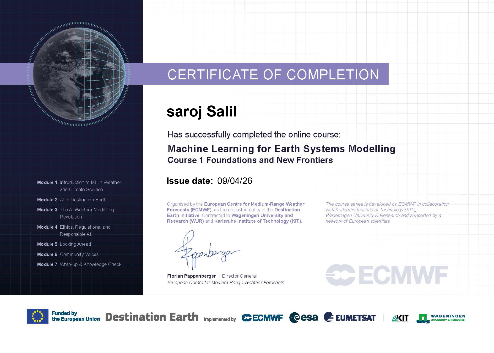

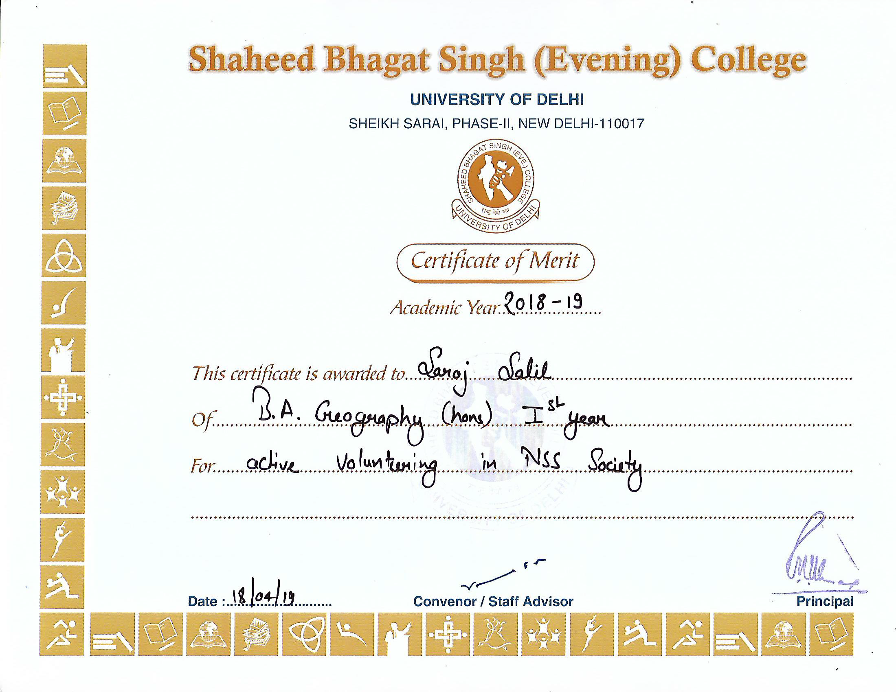

.jpeg)
Curriculum Vitae & Contact
My academic background, research experience, professional timeline, and technical skills.
View / Download Full CV✉️ Email: sarojsalil5@gmail.com | sarojsalil12@gmail.com
💼 LinkedIn: Saroj Salil | LinkedIn
▶️ YouTube: The_geographer_man
📍 Location: Dhanbad, Jharkhand, India